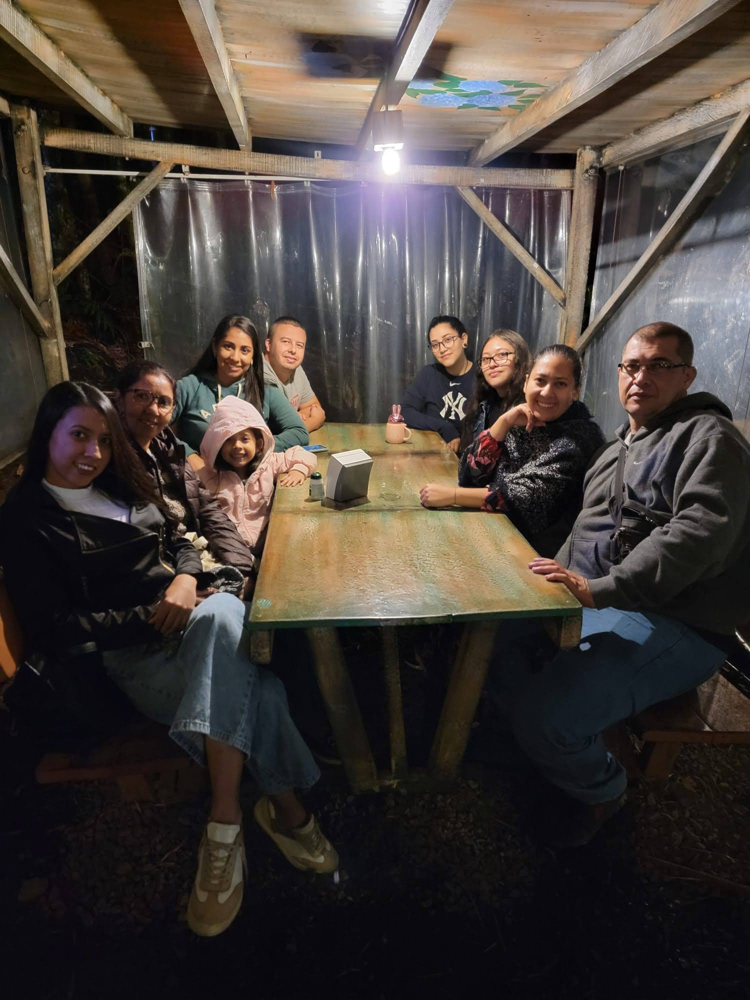

SOBRE MÍ
Soy administradora de Negocios Internacionales, con amplia experiencia en labores administrativas, de gestión y análisis de información tanto administrativa como financiera. Experiencia en manejo de indicadores, bases de datos, manejo de caja, facturación, conciliación y recaudo de cartera.
Me caracterizo por ser tener un alto grado de responsabilidad, honestidad, compromiso y buena actitud para trabajar en equipo.
MI FAMILIA
Estoy casada con Felipe Durango, ingeniero mecánico de la UTP, desde hace 4 años, sin hijos. Mi familia está compuesta, además de mi esposo, por mi mamá, Amparo, ama de casa, mi hermana mayor, Elizabeth, bibliotecaría, mi hermana menor, Andrea, auxiliar administrativa y mis tres hermosas sobrinas, dos de ellas hijas de mi hermana mayor, Natalia y Sofia y mi otra sobrina, Samantha, hija de mi hermana menor.
